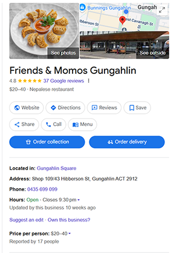

Friends and Momos food truck popped up in Woden’s Edison Park in 2022 and has gathered a cult following of dumpling enthusiasts, students from nearby Canberra College and Canberra’s Nepalese community.
The couple behind the business have now opened a new restaurant in Gungahlin, and they've brought their family along for the ride. Anusha Nagarkoti and Aashis Ayer reached out to their families to help them fund the store – which is conveniently located just around the corner from the light rail stop and close to the bus interchange – and opened the doors just a months ago.